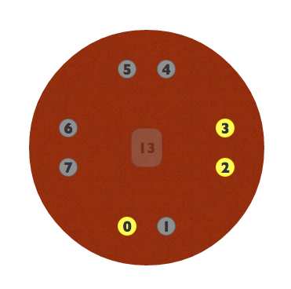

This project is maintained by ecseitz
Changes the tool's mode between Chemistry, Multiplication, and Addition. Chemistry models atoms. Multiplication and addition are binary math functions - the two smaller atoms are the factors and the central atom is the result.
Checks if the result is correct. In math modes, the center of each atom shows the current number that the atom is representing after Check has been pressed.
Displays whether the result is correct or incorrect after Check has been pressed.
Each atom has its own set of LEDs. The atoms can be dragged around the screen to model bonding angles in chemistry mode, or just for fun in math modes. The largest atom is always the "result" atom in math modes.
In chemistry mode, each LED represents one electron. In math mode, each LED is marked with the power of 2 that it represents. An on LED is a 1, an off LED is a 0. So in the example below, the atom represents 00001101, which is 13.
This part is still under development in the virtual tool.